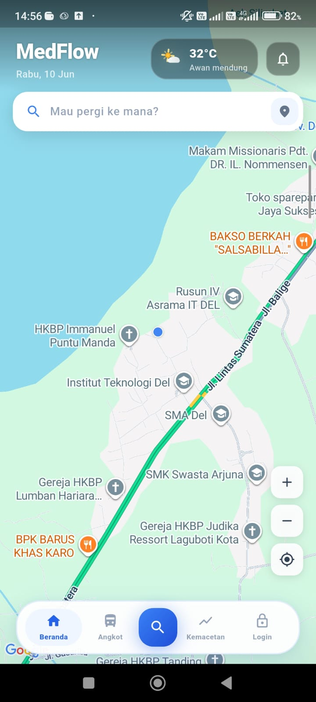
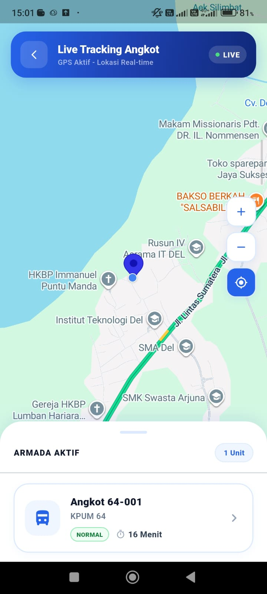
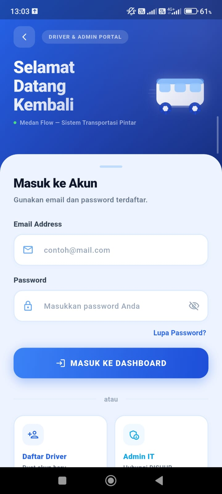
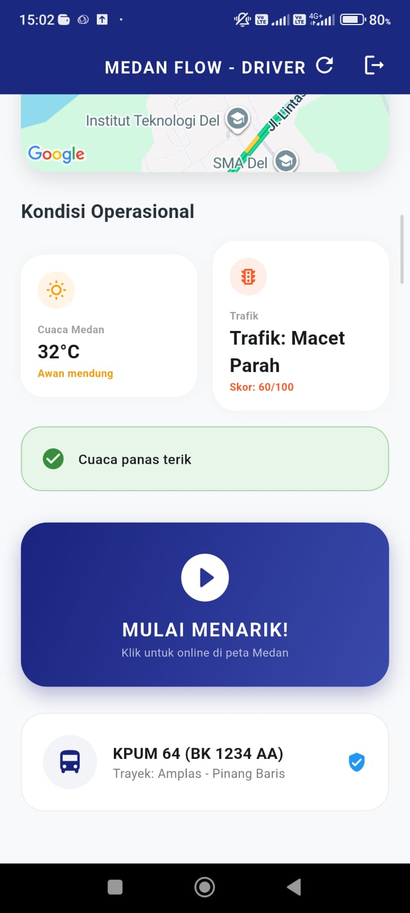
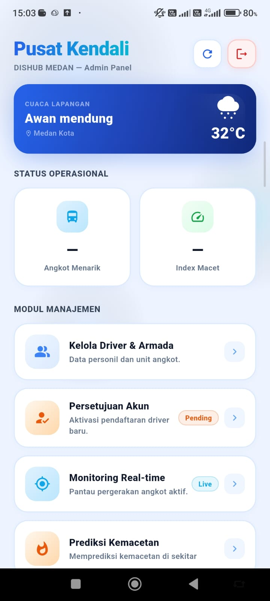

Real-time public transit tracking for Medan's angkot network. Track vehicles live, explore routes, and get weather-aware trip recommendations — one step toward making Medan a true Smart City.
Pelacakan angkutan umum real-time untuk jaringan angkot Medan. Lacak kendaraan secara langsung, jelajahi rute, dan dapatkan rekomendasi perjalanan berdasarkan cuaca — satu langkah menuju Medan Smart City.
OverviewGambaran Umum
MedFlow is a real-time public transportation tracking system built for Medan, Indonesia's third-largest city. The app targets the city's angkot (minibus) network — a network that operates with no digital infrastructure, no schedules, and no predictability for daily commuters.
MedFlow adalah sistem pelacakan transportasi umum real-time yang dibangun untuk Medan, kota terbesar ketiga di Indonesia. Aplikasi ini menyasar jaringan angkot (angkutan kota) — jaringan yang beroperasi tanpa infrastruktur digital, tanpa jadwal, dan tanpa kepastian bagi penumpang sehari-hari.
The system tracks vehicle locations live using GPS data fed through a Laravel REST API backend, visualized on a Flutter mobile app using Google Maps. Users can see which angkot is nearby, how far away it is, and which route it's running — information that simply didn't exist before in any accessible form.
Sistem ini melacak lokasi kendaraan secara langsung menggunakan data GPS yang dikirim melalui backend Laravel REST API, lalu divisualisasikan di aplikasi Flutter menggunakan Google Maps. Pengguna dapat melihat angkot terdekat, jarak tempuhnya, dan rute yang sedang dilalui — informasi yang sebelumnya tidak pernah tersedia dalam bentuk yang mudah diakses.
Beyond tracking, MedFlow integrates real-time weather data from the OpenWeatherMap API to give trip recommendations. If it's raining heavily, the app can suggest alternatives or flag potential delays. The project was built for the Medan Coding Competition 2026, where it was awarded 2nd place.
Lebih dari sekadar pelacakan, MedFlow mengintegrasikan data cuaca real-time dari OpenWeatherMap API untuk memberikan rekomendasi perjalanan. Jika hujan deras, aplikasi dapat menyarankan alternatif rute atau menandai potensi keterlambatan. Proyek ini dibangun untuk Medan Coding Competition 2026 dan meraih Juara 2.
Problem & SolutionMasalah & Solusi
FeaturesFitur
GalleryGaleri





Tech StackTeknologi yang Digunakan